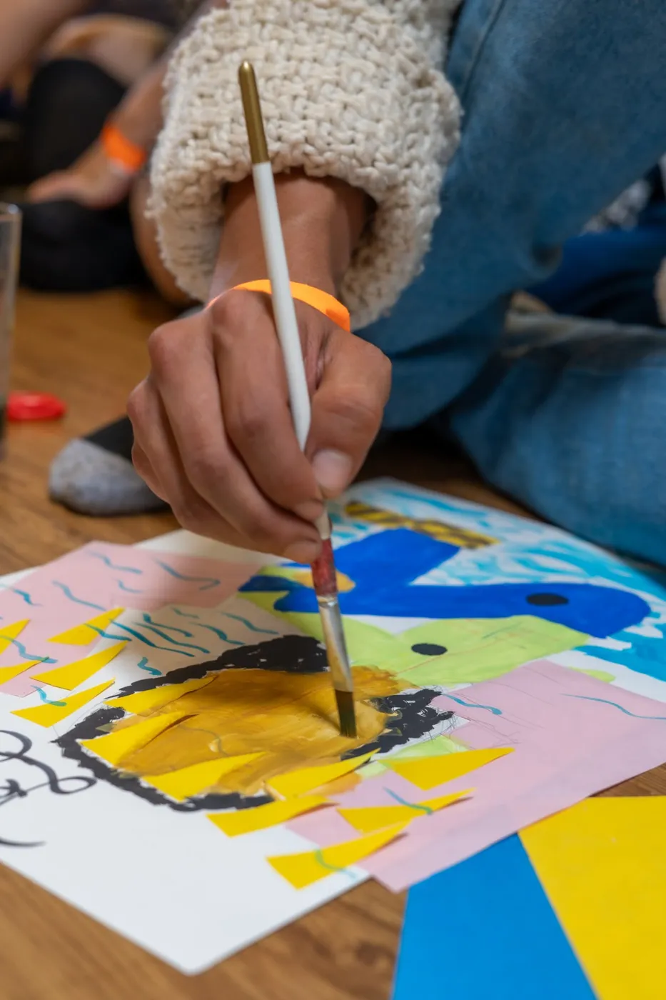

Inspirado en Jackson Pollock
Trazo en Movimiento
Usamos el color y el movimiento libre de la pintura para descargar la presión acumulada, sacudir la frustración y recuperar el enfoque.
Para cuando la frustración te pide sacudirte.